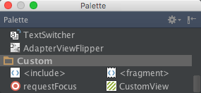
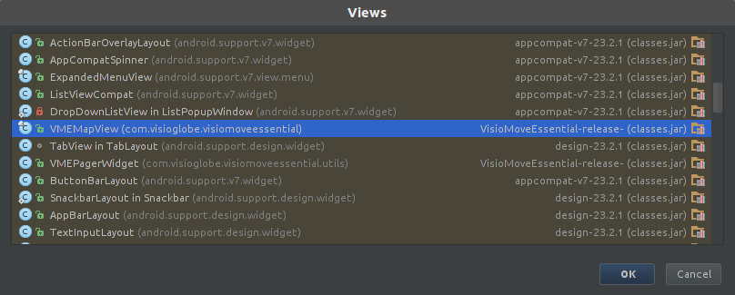

Integrate VisioMove Essential into your Android app to explore, search and navigate within your Visioglobe map.
Requirements
To use this framework you will need:
- Android Studio
- Android SDK 17 or higher
Map requirements
To play well with VisioMove Essential, your Visioglobe map should:
- be published at VisioMove SDK v2.1.3 or greater (ask your Visioglobe project manager if you're unsure)
- be hosted on the map server (i.e retrieved via a hash code)
- have at least one localisation language.
Setup build tools
Set the build tools version within your projects build.gradle file to at least 20.0.0. This fixes a layout rendering issue:
android {
...
buildToolsVersion "20.0.0"
...
}
Setup dependencies
Add in "repositories" and "dependencies" sections of the module-level build.gradle (replace 'libs' with the location where you put VisioMoveEssential.aar reative to the build.gradle file):
repositories {
flatDir {
dir 'libs'
}
}
dependencies {
...
implementation 'com.android.support.constraint:constraint-layout:1.1.3'
implementation(name:"VisioMoveEssential", ext:"aar")
...
}
If your project uses AndroidX, add this line in your gradle.properties file :
# Automatically convert third-party libraries to use AndroidX
android.enableJetifier=true
Add VMEMapView to project
Step 1: Add the VMEMapView view to layout
Follow the below steps within Android Studios to add the custom VMEMapView view to your application.
- Open the layout xml file where you wish to add the view
- Add the app xml namespace in the layout's root xml element:
<LinearLayout
xmlns:app="http://schemas.android.com/apk/res-auto"
...
- Click "CustomView" from the palette

- Select the VMEMapView class from the dialog

- Place the VMEMapView view within the layout. It will add something like this to the layout:
<com.visioglobe.visiomoveessential.VMEMapView
android:layout_width="wrap_content"
android:layout_height="0dp"
android:id="@+id/mapView"
android:layout_gravity="center_horizontal"
android:layout_weight="1"
/>
Step 2: Connect Map Bundle to the VMEMapView
Connect the map bundle to custom view. A map bundle can be embedded in the application, retrieved remotely from a server or both:
- Embedded
- app:mapPath - The path of the embedded map bundle zip file, relative to the asset resource directory.
- app:mapSecretCode - The secret code associated with the embedded map bundle.
- And/or connected remotely
- app:mapHash - The hash code to retrieve the latest remote map bundle published by VisioMapEditor. This value will be checked when the map view is first loaded.
- app:mapServerUrl - The url where the map is located. If omitted, it will default to https://mapserver.visioglobe.com.
For example:
<com.visioglobe.visiomoveessential.VMEMapView
app:mapPath="asset://map_bundle.zip"
app:mapSecretCode="0"
app:mapHash="ma10a386909f58fb12f8bbde9c3111c46077f485d"
android:layout_width="wrap_content"
android:layout_height="0dp"
android:id="@+id/mapView"
android:layout_gravity="center_horizontal"
android:layout_weight="1" />
/>
Step 3: Load map
In the java code, you have to call the VMEMapView::loadMap() method to start loading the map.